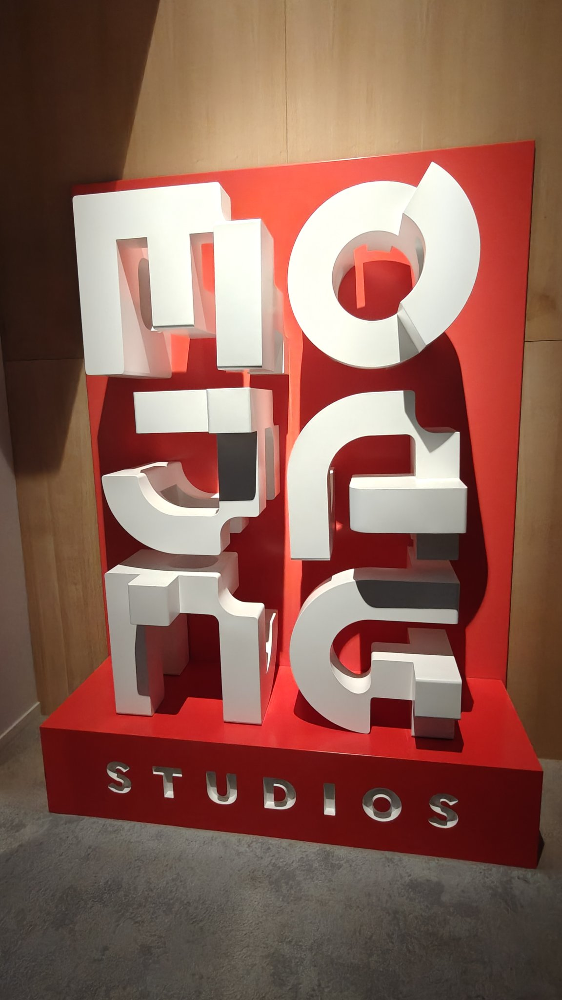
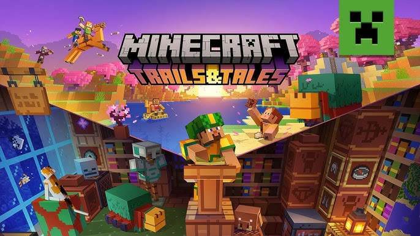

We will explore two different sides of the history of Minecraft here, the most technical part will talk of the development of this game, the second one is based on the different evolutions that the game had towards the years.
Where do you want to start?


Chatbot